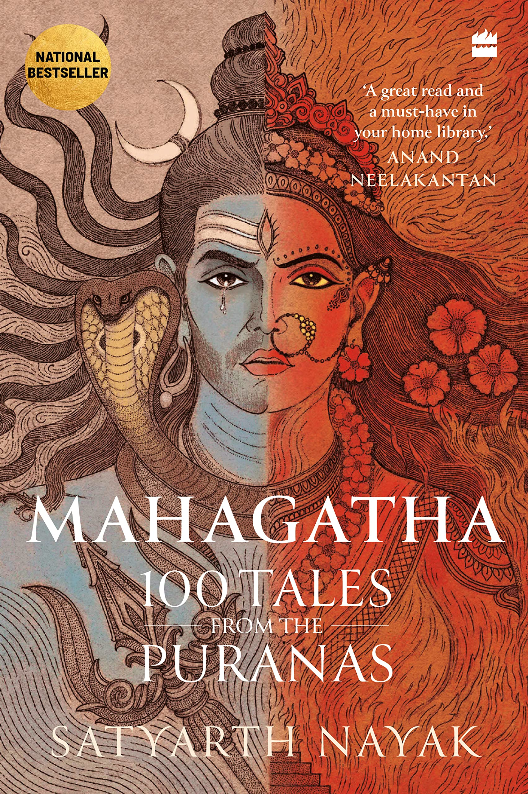
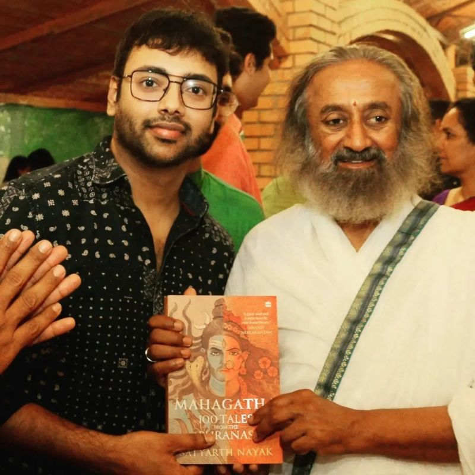

This book is based on the life of Maa Sita from childhood to the day she went into the dephts of Earth. We always think that in Ramayan Ram has played such an important role and struggled so much but nobody talks about how Maa Sita had to struggle even more than him throughout her entire life and most importantly when she was abandoned by her own husband to live in a hermitage whilst she carried his sons in her womb. This story really touched my heart and taught me how to always be strong in the most toughest and twisted situations.The author beautifully portrays how love is a strong force for which we even put our life in danger. The author is Chitra Banerjee Divakaruni(please refer with the picture on your right.)
Some remarks from scholars, writers and reviewers :
‘Chitra Banerjee Divakaruni turns the Ramayana around by telling it in the voice of Sita … This inversion is a gift – it presents us a with a way to know an already well-known story better and to love an already beloved story more’—Arshia Sattar
‘This inspired evocation of the goddess Sita is an epic song of strength and solidarity told with joy and intensity. It brings to life the personalities and predicaments of the Ramayana’ —Namita Gokhale
‘Among the many, many Ramayanas there are now even—thankfully—some “Sitayanas”, but I know of none with the special magic that Chitra Divakaruni … brings to the telling’—Philip Lutgendorf
‘Chitra Banerjee Divakaruni’s Sita … is an epitome of courage and self-respect, showing a path for all women. While weaving a familiar story, Chitra provides deep and surprising insights’ —Volga
‘In recasting the Ramayan as a love story Divakaruni accords Sita parity with Ram, revealing her innate strength. By giving primacy to her thoughts and feelings this also becomes the private tale of Shri and Shrimati Ramchandra Raghuvanshi, two wonderful people who loved each other but who broke up. To readers well-acquainted with that tragedy of modern times, the failed marriage, it will appeal. The ending, however, surpasses all expectations.’ The Sunday Standard
‘Divakaruni’s retelling reminds her readers that the Ramayana, besides being a morality tale, is a love story at its heart’ Huffpost

This novel takes us back to the time when a bloody war was taking place holding under its grasp the very truth of virtue(Pandavs) and sinfullness(Kauravs). This is the story of the Indian epic Mahabharat in the voice of Draupadi, the ultimate epitome of feminism and feminity. How must she had felt when she was harrased and objectified in the open court, in front of her own husbands and then had to wander with her husbands when they were cheated out of their father's kingdom.
Some remarks from scholars, writers and reviewers :
“A rich tale of passion and love, power and weakness, honor and humiliation. Whether or not readers are familiar with the Mahabharat epic, they will enjoy this entertaining, insightful and suspenseful story.” (Library Journal, starred review)
“The Palace of Illusions by Chitra Banerjee Divakaruni is as sprawling and bright a gem as the Hope Diamond – a mythic tale brimming with warriors, magic and trachery (and its brother, deceit)…. Who better to attempt the feat of transforming a centuries-old cultural icon into a personal, modern story than Divakaruni, a professor of English at the University of Houston and author of numerous award-winning works, including the luscious novel The Mistress of Spices and the bestselling Sister of my Heart. Divakaruni’s sentences dazzle; the images she creates are masterful….” (Los Angeles Times)
“Panchaali’s narrative provides a radient entrée into an ancient mythology virtually unknown to the Western world. Divakaruni’s impulse to flesh out the women of the Mahabharat results in a charming and remarkable book.” (The Houston Chronicle)
“Vivid and inventive. . . . rich, action-filled. . . complex.” (Publisher’s Weekly)
“Your truly epic narrative myth calls for bitter experience descending, avalanche-like, down dynasties, incorporating dramatic turning points of ineradicable impact; curses; looming fates; tricky and meddlesome gods; feuds; sages, sorcerers and wars. These elements and many more are found in abundance in Chitra Banerjee Divakaruni’s new novel, The Palace of Illusions, which ambitiously encapsulates the Indian epic “Mahabharat” within a 360-page novel.” (San Francisco Chronicle)
We are aware of a number of customs and traditions of our religion but most of all are not aware of the exact facts that lie beyond our basic imagination, or the things which we are told about is counterfactual or half true. So to know the exact facts about hindu mythology, this book is the perfect book for your curious mind. It takes you to the depths of hindu mythology. Hindu mythology refers to a vast body of ancient stories, beliefs, and traditions that have evolved over thousands of years in the Indian subcontinent. These myths encompass many gods, goddesses, heroes, and creatures and are integral to Hindu religion and culture. Some of the most well-known Hindu myths include the creation story of the god Brahma, the tales of Vishnu and his avatars (incarnations), and the God Shiva. These stories also have numerous stories of divine and demonic beings and multiple cosmologies and explanations for the origins of life and the universe.